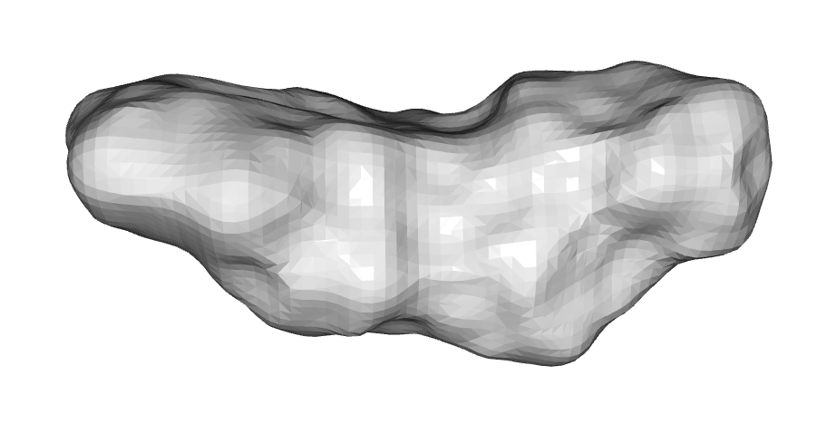
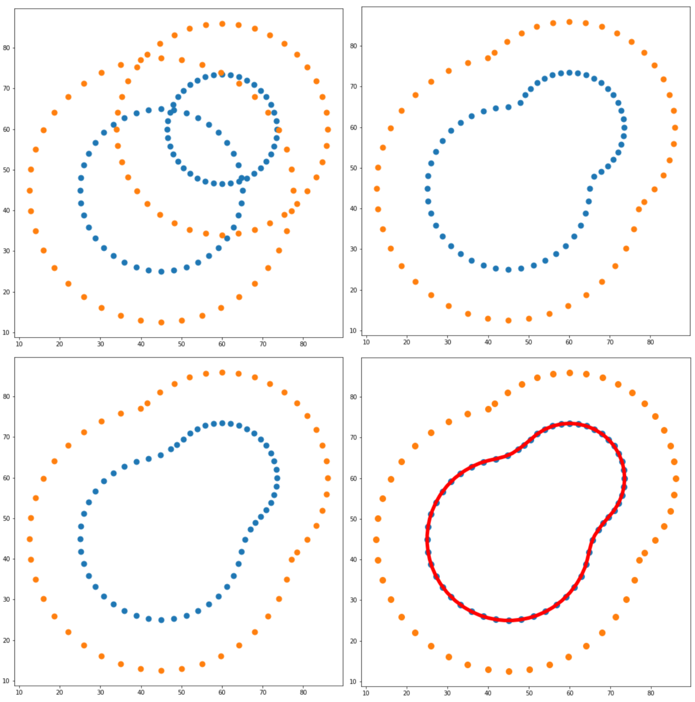

Ligand overlay 3: meshing the solvent-excluded surface
Notebook on github - Step 3 meshing the SES
SESMesh.py

Volume overlap techniques calculate volume using either voxels (David Koes lab, doi) or Gaussian approximation of atoms (Grant et al doi, alternatively Silicos ShapeIt or gWEGA). Gaussians are nice because volume overlap becomes differentiable, and voxels are nice because the calculations are extremely fast, although they are dependent on initial orientation because they can't be rotated.
To my knowledge no one has used triangular meshes of the solvent-excluded surface (see pic above). Meshes are nice because volume is well defined and they are deformable. Most importantly, though, they model shape using the outer surface of a molecule, which is the crucial feature of shape overlap techniques. As described in the WEGA paper, using Gaussians can lead to weird artifacts where some moieties have 2- to 6-fold more volume overlap than they should thanks to overlapping Gaussian centres, which are more dense. This won't happen with a mesh.
If the mesh models the so-called 'solvent-excluded surface' (SES) then it is totally blind to the identity of the underlying atoms, which hopefully leads to better scaffold-hopping potential while also keeping volume overlap accurate. The SES is like a shrink-wrapped surface that measures the volume where a solvent molecule can't sample.
There's no formal solution for the SES - over the decades there have been tens of different approaches - all of which work pretty well but differ in memory and time requirements. My favourite approach is the one ChimeraX by Tom Godard, because it's fast and practical.
There aren't any SES meshing applications in python, though. It took months of fiddling, but I worked out a way to do it with just numpy and scipy that takes ~500ms per molecule. It starts by sampling points on the VDW surface and solvent-accessible surface, then removes points that would overlap another atom. The re-entrant surfaces of the SES are generated by translating any VDW points that are inaccessible by a probe sphere. This is followed by marching cubes. In 3D, it generates the mesh above, in 2D, it looks like this:

There's a lot of improvements to make. For starters, the algorithm is quadratic in atom number so it will freeze your laptop if you attempt a whole protein. In addition, the marching_cubes algorithm could be restricted to just the grid points adjacent to the SES, rather than every grid point in the bounding box. But for now - it works :)